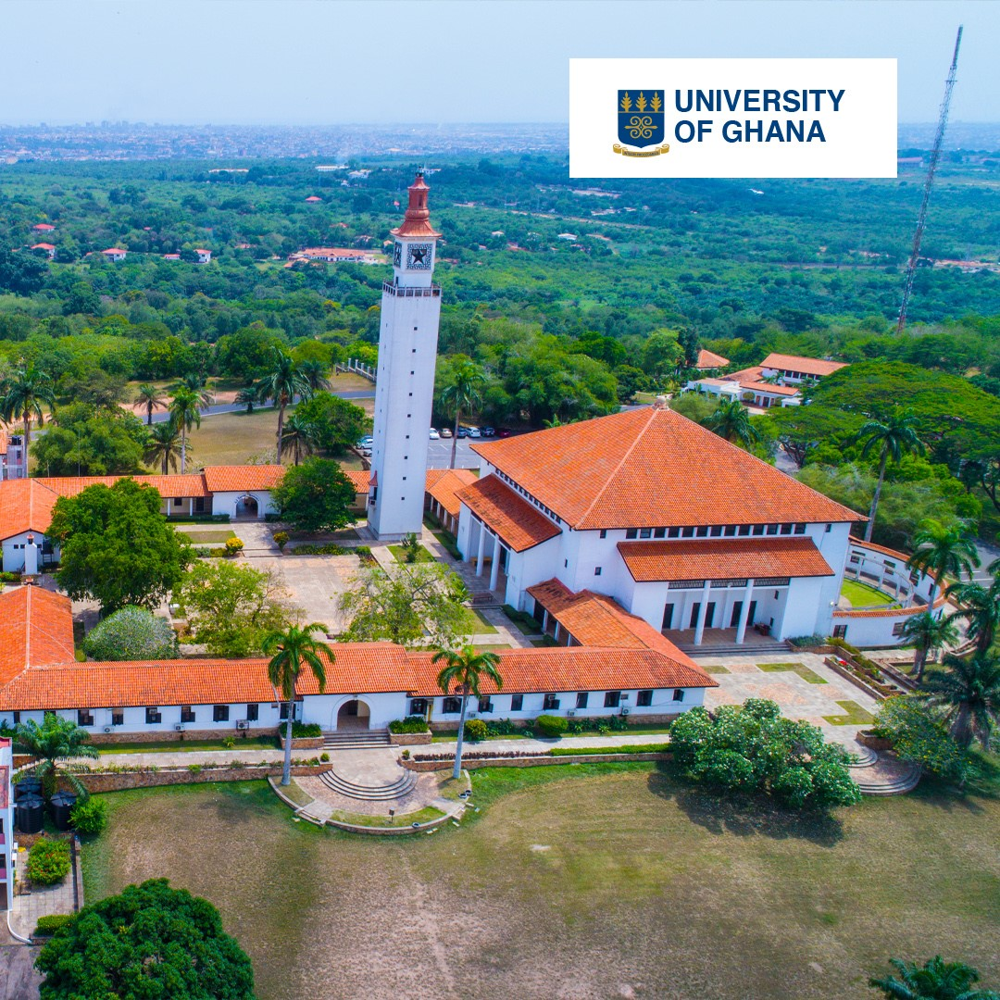
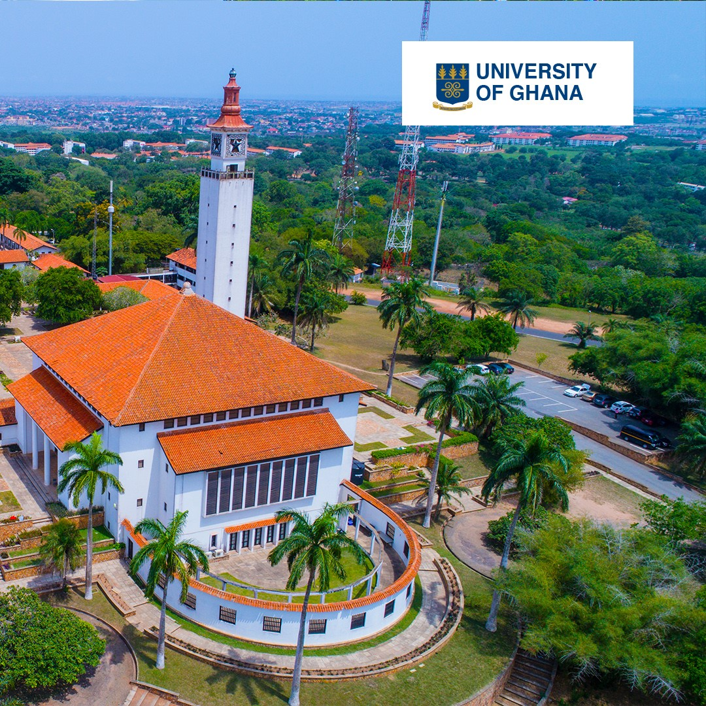
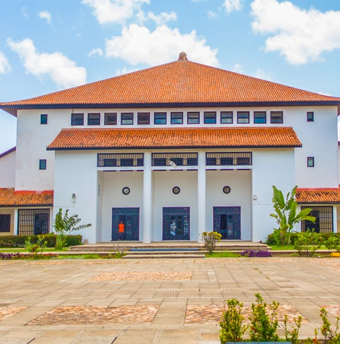

Integri Procedamus
|  |  |  |
The University of Ghana is the oldest and largest of the thirteen Ghanaian national public universities. It was foundeded in the year 1948, in the British colony of the gold Coast, and was originally an affiliate college of the University of London which supervised its academic programs and awarded degrees. After independence in 1957, the college was renamed the University College Of Ghana. it changed its name to University of Ghana in 1961, when it gained full university status. The original emphasis on establishing the University of Ghana was on the liberal arts, social sciences, law, basic science, agriculture and medicine. However, as part of the national educational reform program, the university curriculum was expanded to provide more technology-based and vocational courses as we as postgraduate training.
The University of Ghana which is mainly based at legon, about 12 kilometers northeast of the center of Accra has its medical school in the town called Korle-Bu, with a teaching hospital and a secondary/external campus in the city of Accra. It also has a graduate school of nuclear amd Allied Sciences at the Ghana Atomic Energy Commission, marking it one of the few universities on the African continent offering programs in nuclear physics and nuclear engineering.
The logo is made up of two colors; Indigo and Camel. The blue shield with three AYA
standing for upright in top half and
DWENINMENTOASO
in the middle of bottom half, all embossed in gold. The logo was designed by A.M. Opoku.
The symbol represent Truthfulness and an ability to stay upright.
For more enquiries please contact at:
jnttackie009@st.ug,edu.gh
Website:www.ug.edu.gh